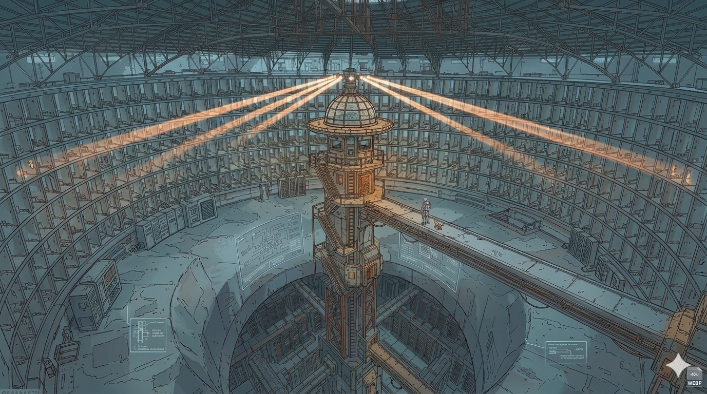

Most technology implementations fail at the last 10% — actual production. We start there. Supervisors adopt. Results surface. Management pulls the capability toward them. That's not a workaround. That's the doctrine.
Your most experienced people are retiring. What they know isn't in the SOP — it's judgment built over twenty years. When they leave, it leaves.
Someone handed you a new platform and called it a solution. It works in a conference room. On the production floor, with your actual constraints, it doesn't land.
IT handles infrastructure. Training handles courses. Nobody owns the space between a new AI capability and the person who needs to use it on shift.
Every agent is operational on authorized infrastructure — built for a specific production-floor use case, not a demo.
Ingests SOPs, work instructions. Builds a machine-readable knowledge library.
OperationalCaptures what experienced people know before they leave.
OperationalAudits the library. Flags gaps and single points of failure.
OperationalReconstructs QA incidents before the investigation team assembles.
OperationalSynthesizes outputs across the system into consolidated intelligence.
OperationalAnswers questions against the full organizational knowledge base.
OperationalDerivative classification review. Active on Bert, Faye, Theseus, Clew, and Aletheia.
OperationalSurfaces relevant library entries into Faye's context at session start.
OperationalThe cumulative, structured record of everything the system has captured and indexed.
ActiveWe don't need a formal request. We need to understand your problem. If it fits what we build, we'll set up a working session — not a briefing, not a demo. A conversation about the actual work.
Open a Channel